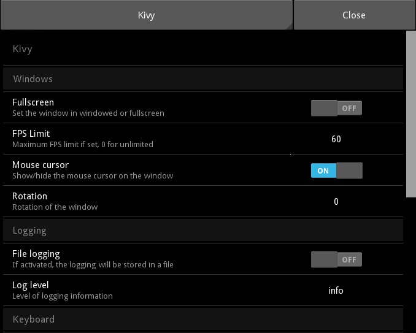

{kind=link}
Table Of Contents
Settings¶
New in version 1.0.7.
This module is a complete and extensible framework for adding a Settings interface to your application. By default, the interface uses a SettingsWithSpinner, which consists of a Spinner (top) to switch between individual settings panels (bottom). See Different panel layouts for some alternatives.
A SettingsPanel represents a group of configurable options. The SettingsPanel.title property is used by Settings when a panel is added - it determines the name of the sidebar button. SettingsPanel controls a ConfigParser instance.
The panel can be automatically constructed from a JSON definition file: you describe the settings you want and corresponding sections/keys in the ConfigParser instance... and you’re done!
Settings are also integrated with the App class. Use Settings.add_kivy_panel() to configure the Kivy core settings in a panel.
Create a panel from JSON¶
To create a panel from a JSON-file, you need two things:
- a ConfigParser instance with default values
- a JSON file
Warning
The kivy.config.ConfigParser is required. You cannot use the default ConfigParser from Python libraries.
You must create and handle the ConfigParser object. SettingsPanel will read the values from the associated ConfigParser instance. Make sure you have default values for all sections/keys in your JSON file!
The JSON file contains structured information to describe the available settings. Here is an example:
[
{
"type": "title",
"title": "Windows"
},
{
"type": "bool",
"title": "Fullscreen",
"desc": "Set the window in windowed or fullscreen",
"section": "graphics",
"key": "fullscreen",
"true": "auto"
}
]
Each element in the root list represents a setting that the user can configure. Only the “type” key is mandatory: an instance of the associated class will be created and used for the setting - other keys are assigned to corresponding properties of that class.
Type Associated class title SettingTitle bool SettingBoolean numeric SettingNumeric options SettingOptions string SettingString path SettingPath (new from 1.1.0)
In the JSON example above, the first element is of type “title”. It will create a new instance of SettingTitle and apply the rest of the key/value pairs to the properties of that class, i.e. “title”: “Windows” sets the SettingTitle.title property to “Windows”.
To load the JSON example to a Settings instance, use the Settings.add_json_panel() method. It will automatically instantiate a SettingsPanel and add it to Settings:
from kivy.config import ConfigParser
config = ConfigParser()
config.read('myconfig.ini')
s = Settings()
s.add_json_panel('My custom panel', config, 'settings_custom.json')
s.add_json_panel('Another panel', config, 'settings_test2.json')
# then use the s as a widget...
Different panel layouts¶
A kivy App can automatically create and display a Settings instance. See the settings_cls documentation for details on how to choose which settings class to display.
Several pre-built settings widgets are available. All except SettingsWithNoMenu include close buttons triggering the on_close event.
- Settings: Displays settings with a sidebar at the left to switch between json panels.
- SettingsWithSidebar: A trivial subclass of Settings.
- SettingsWithSpinner: Displays settings with a spinner at the top, which can be used to switch between json panels. Uses InterfaceWithSpinner as the interface_cls. This is the default behavior from Kivy 1.8.0.
- SettingsWithTabbedPanel: Displays json panels as individual tabs in a TabbedPanel. Uses InterfaceWithTabbedPanel as the interface_cls.
- SettingsWithNoMenu: Displays a single json panel, with no way to switch to other panels and no close button. This makes it impossible for the user to exit unless close_settings() is overridden with a different close trigger! Uses InterfaceWithNoMenu as the interface_cls.
You can construct your own settings panels with any layout you choose by setting Settings.interface_cls. This should be a widget that displays a json settings panel with some way to switch between panels. An instance will be automatically created by Settings.
Interface widgets may be anything you like, but must have a method add_panel that recieves newly created json settings panels for the interface to display. See the documentation for InterfaceWithSidebar for more information. They may optionally dispatch an on_close event, for instance if a close button is clicked. This event is used by Settings to trigger its own on_close event.
- class kivy.uix.settings.Settings(*args, **kargs)[source]¶
Bases: kivy.uix.boxlayout.BoxLayout
Settings UI. Check module documentation for more information on how to use this class.
Events : - on_config_change: ConfigParser instance, section, key, value
Fired when section/key/value of a ConfigParser changes.
- on_close
Fired by the default panel when the Close button is pressed.
- add_interface()[source]¶
(Internal) creates an instance of Settings.interface_cls, and sets it to interface. When json panels are created, they will be added to this interface which will display them to the user.
- add_json_panel(title, config, filename=None, data=None)[source]¶
Create and add a new SettingsPanel using the configuration config with the JSON definition filename.
Check the Create a panel from JSON section in the documentation for more information about JSON format and the usage of this function.
- add_kivy_panel()[source]¶
Add a panel for configuring Kivy. This panel acts directly on the kivy configuration. Feel free to include or exclude it in your configuration.
See use_kivy_settings() for information on enabling/disabling the automatic kivy panel.
- create_json_panel(title, config, filename=None, data=None)[source]¶
Create new SettingsPanel.
New in version 1.5.0.
Check the documentation of add_json_panel() for more information.
- interface¶
(internal) Reference to the widget that will contain, organise and display the panel configuration panel widgets.
interface is an ObjectProperty and defaults to None.
- interface_cls¶
The widget class that will be used to display the graphical interface for the settings panel. By default, it displays one Settings panel at a time with a sidebar to switch between them.
interface_cls is an ObjectProperty and defaults to :class`InterfaceWithSidebar`.
Changed in version 1.8.0: If you set a string, the Factory will be used to resolve the class.
- class kivy.uix.settings.SettingsPanel(**kwargs)[source]¶
Bases: kivy.uix.gridlayout.GridLayout
This class is used to contruct panel settings, for use with a Settings instance or subclass.
- config¶
A kivy.config.ConfigParser instance. See module documentation for more information.
- get_value(section, key)[source]¶
Return the value of the section/key from the config ConfigParser instance. This function is used by SettingItem to get the value for a given section/key.
If you don’t want to use a ConfigParser instance, you might want to override this function.
- class kivy.uix.settings.SettingItem(**kwargs)[source]¶
Bases: kivy.uix.floatlayout.FloatLayout
Base class for individual settings (within a panel). This class cannot be used directly; it is used for implementing the other setting classes. It builds a row with a title/description (left) and a setting control (right).
Look at SettingBoolean, SettingNumeric and SettingOptions for usage examples.
Events : - on_release
Fired when the item is touched and then released.
- content¶
(internal) Reference to the widget that contains the real setting. As soon as the content object is set, any further call to add_widget will call the content.add_widget. This is automatically set.
content is an ObjectProperty and defaults to None.
- desc¶
Description of the setting, rendered on the line below the title.
desc is a StringProperty and defaults to None.
- disabled¶
Indicate if this setting is disabled. If True, all touches on the setting item will be discarded.
disabled is a BooleanProperty and defaults to False.
- key¶
Key of the token inside the section in the ConfigParser instance.
key is a StringProperty and defaults to None.
- panel¶
(internal) Reference to the SettingsPanel for this setting. You don’t need to use it.
panel is an ObjectProperty and defaults to None.
- section¶
Section of the token inside the ConfigParser instance.
section is a StringProperty and defaults to None.
- selected_alpha¶
(internal) Float value from 0 to 1, used to animate the background when the user touches the item.
selected_alpha is a NumericProperty and defaults to 0.
- title¶
Title of the setting, defaults to ‘<No title set>’.
title is a StringProperty and defaults to ‘<No title set>’.
- value¶
Value of the token according to the ConfigParser instance. Any change to this value will trigger a Settings.on_config_change() event.
value is an ObjectProperty and defaults to None.
- class kivy.uix.settings.SettingString(**kwargs)[source]¶
Bases: kivy.uix.settings.SettingItem
Implementation of a string setting on top of a SettingItem. It is visualized with a Label widget that, when clicked, will open a Popup with a Textinput so the user can enter a custom value.
- popup¶
(internal) Used to store the current popup when it’s shown.
popup is an ObjectProperty and defaults to None.
- textinput¶
(internal) Used to store the current textinput from the popup and to listen for changes.
textinput is an ObjectProperty and defaults to None.
- class kivy.uix.settings.SettingPath(**kwargs)[source]¶
Bases: kivy.uix.settings.SettingItem
Implementation of a Path setting on top of a SettingItem. It is visualized with a Label widget that, when clicked, will open a Popup with a FileChooserListView so the user can enter a custom value.
New in version 1.1.0.
- popup¶
(internal) Used to store the current popup when it is shown.
popup is an ObjectProperty and defaults to None.
- textinput¶
(internal) Used to store the current textinput from the popup and to listen for changes.
textinput is an ObjectProperty and defaults to None.
- class kivy.uix.settings.SettingBoolean(**kwargs)[source]¶
Bases: kivy.uix.settings.SettingItem
Implementation of a boolean setting on top of a SettingItem. It is visualized with a Switch widget. By default, 0 and 1 are used for values: you can change them by setting values.
- values¶
Values used to represent the state of the setting. If you want to use “yes” and “no” in your ConfigParser instance:
SettingBoolean(..., values=['no', 'yes'])
Warning
You need a minimum of two values, the index 0 will be used as False, and index 1 as True
values is a ListProperty and defaults to [‘0’, ‘1’]
- class kivy.uix.settings.SettingNumeric(**kwargs)[source]¶
Bases: kivy.uix.settings.SettingString
Implementation of a numeric setting on top of a SettingString. It is visualized with a Label widget that, when clicked, will open a Popup with a Textinput so the user can enter a custom value.
- class kivy.uix.settings.SettingOptions(**kwargs)[source]¶
Bases: kivy.uix.settings.SettingItem
Implementation of an option list on top of a SettingItem. It is visualized with a Label widget that, when clicked, will open a Popup with a list of options from which the user can select.
- options¶
List of all availables options. This must be a list of “string” items. Otherwise, it will crash. :)
options is a ListProperty and defaults to [].
- popup¶
(internal) Used to store the current popup when it is shown.
popup is an ObjectProperty and defaults to None.
- class kivy.uix.settings.SettingTitle(**kwargs)[source]¶
Bases: kivy.uix.label.Label
A simple title label, used to organize the settings in sections.
- class kivy.uix.settings.SettingsWithSidebar(*args, **kargs)[source]¶
Bases: kivy.uix.settings.Settings
A settings widget that displays settings panels with a sidebar to switch between them. This is the default behaviour of Settings, and this widget is a trivial wrapper subclass.
- class kivy.uix.settings.SettingsWithSpinner(*args, **kwargs)[source]¶
Bases: kivy.uix.settings.Settings
A settings widget that displays one settings panel at a time with a spinner at the top to switch between them.
- class kivy.uix.settings.SettingsWithTabbedPanel(*args, **kwargs)[source]¶
Bases: kivy.uix.settings.Settings
A settings widget that displays settings panels as pages in a TabbedPanel.
- class kivy.uix.settings.SettingsWithNoMenu(*args, **kwargs)[source]¶
Bases: kivy.uix.settings.Settings
A settings widget that displays a single settings panel with no Close button. It will not accept more than one Settings panel. It is intended for use in programs with few enough settings that a full panel switcher is not useful.
Warning
This Settings panel does not provide a Close button, and so it is impossible to leave the settings screen unless you also add other behaviour or override display_settings() and close_settings().
- class kivy.uix.settings.InterfaceWithSidebar(*args, **kwargs)[source]¶
Bases: kivy.uix.boxlayout.BoxLayout
The default Settings interface class. It displays a sidebar menu with names of available settings panels, which may be used to switch which one is currently displayed.
See add_panel() for information on the method you must implement if creating your own interface.
This class also dispatches an event ‘on_close’, which is triggered when the sidebar menu’s close button is released. If creating your own interface widget, it should also dispatch such an event which will automatically be caught by Settings and used to trigger its own ‘on_close’ event.
- add_panel(panel, name, uid)[source]¶
This method is used by Settings to add new panels for possible display. Any replacement for ContentPanel must implement this method.
Parameters: - panel – A SettingsPanel. It should be stored and the interface should provide a way to switch between panels.
- name – The name of the panel as a string. It may be used to represent the panel but isn’t necessarily unique.
- uid – A unique int identifying the panel. It should be used to identify and switch between panels.
- content¶
(internal) A reference to the panel display widget (a ContentPanel).
content is an ObjectProperty and defaults to None.
(internal) A reference to the sidebar menu widget.
menu is an ObjectProperty and defaults to None.
- class kivy.uix.settings.ContentPanel(**kwargs)[source]¶
Bases: kivy.uix.scrollview.ScrollView
A class for displaying settings panels. It displays a single settings panel at a time, taking up the full size and shape of the ContentPanel. It is used by InterfaceWithSidebar and InterfaceWithSpinner to display settings.
- add_panel(panel, name, uid)[source]¶
This method is used by Settings to add new panels for possible display. Any replacement for ContentPanel must implement this method.
Parameters: - panel – A SettingsPanel. It should be stored and displayed when requested.
- name – The name of the panel as a string. It may be used to represent the panel.
- uid – A unique int identifying the panel. It should be stored and used to identify panels when switching.
- container¶
(internal) A reference to the GridLayout that contains the settings panel.
container is an ObjectProperty and defaults to None.
- current_panel¶
(internal) A reference to the current settings panel.
current_panel is an ObjectProperty and defaults to None.
- current_uid¶
(internal) A reference to the uid of the current settings panel.
current_uid is a NumericProperty and defaults to 0.
- on_current_uid(*args)[source]¶
The uid of the currently displayed panel. Changing this will automatically change the displayed panel.
Parameters: uid – A panel uid. It should be used to retrieve and display a settings panel that has previously been added with add_panel().
- panels¶
(internal) Stores a dictionary mapping settings panels to their uids.
panels is a DictProperty and defaults to {}.